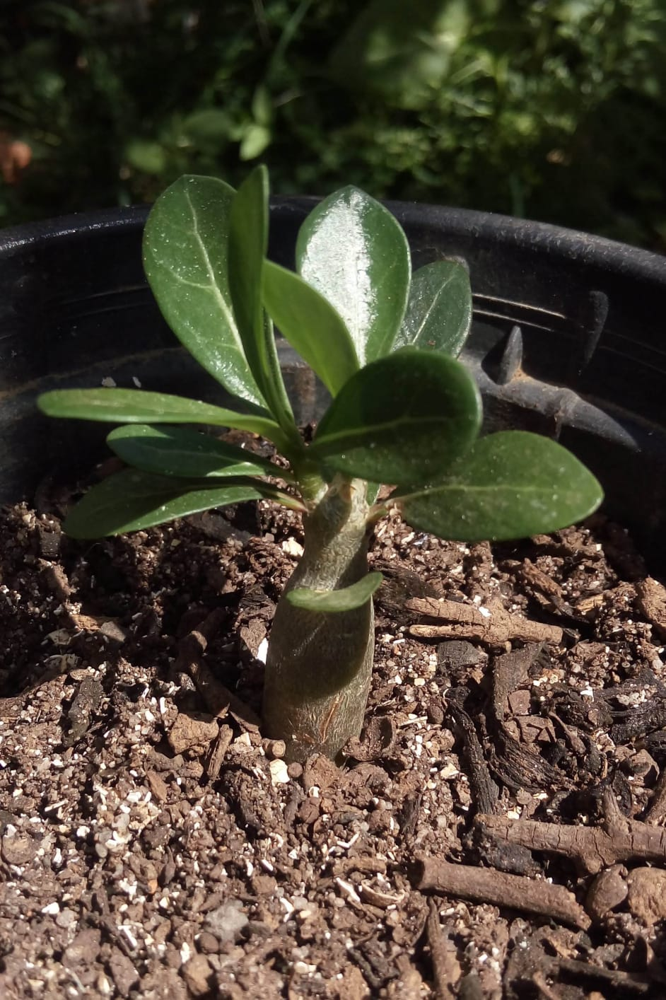

Minhas plantas
Nessa página eu vou mostrar um pouco das minhas plantas e parte de suas histórias.
Tudo começou quando eu ganhei a minha primeira plantinha, lá em 2019, não sabia que depois disso meu quintal iria ficar parecendo um botânico kkkkkkkk.
